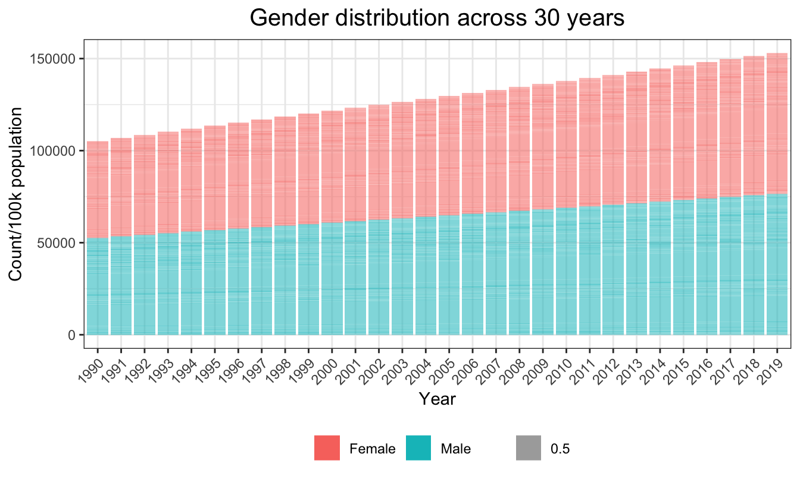

Analysis
Data
maindata has 60000 observations and 11 features. We
are adjusting for population size by dividing val (point
estimate of number of HIV/AIDS deaths) by population
multiplied by 100,000 to get a mortality_per_100k variable
and a log_mortality_per_100k variable.
regression = maindata %>%
mutate(mortality_per_100k = val / (population/100000),
log_mortality_per_100k = log(mortality_per_100k),
year_2004 = if_else(year <= 2004, 1, 0),
year_2004 = as.factor(year_2004),
country_name = as.factor(country_name))
regression %>%
summarize(col_name = colnames(regression),
n_missing = map(regression, ~sum(is.na(.)))) %>%
unnest(n_missing)## # A tibble: 14 × 2
## col_name n_missing
## <chr> <int>
## 1 location_id 0
## 2 country_name 0
## 3 year 0
## 4 gdp_per_capita 2880
## 5 population 110
## 6 sex_id 0
## 7 sex_name 0
## 8 age_name 0
## 9 val 0
## 10 upper 0
## 11 lower 0
## 12 mortality_per_100k 110
## 13 log_mortality_per_100k 110
## 14 year_2004 0Exploratory data analysis
We will check the distribution of the following predictors:
sex_name, age_name, and
gdp_per_capita
Sex
sex_count = maindata %>%
select(country_name, population, sex_name, year) %>%
group_by(year, sex_name) %>%
distinct(population) %>%
mutate(count = population/100000)In maindata, the global sex distribution across years was approximately balanced between males and females.
plot_sex = ggplot(aes(x=as.factor(year),y=count,fill=sex_name, alpha = 0.5),data=sex_count)+
geom_bar(stat="identity") +
ggtitle("Gender distribution across 30 years") +
theme(axis.text.x = element_text(angle = 45, hjust = 1))+
labs(
x = "Year",
y = "Count/100k population"
)
plot_sex
Age
age_count = maindata %>%
select(country_name, population, age_name, year) %>%
group_by(year,age_name) %>%
distinct(population) %>%
mutate(count = population/100000)In maindata, the global age distribution across years was approximately balanced across the years between the five age groups.
plot_age = ggplot(aes(x=as.factor(year),y=count,fill=age_name, alpha = 0.5),data=age_count)+
geom_bar(stat="identity") +
ggtitle("Age distribution across 30 years") +
theme(axis.text.x = element_text(angle = 45, hjust = 1))+
labs(
x = "Year",
y = "Count/100k population"
)
plot_ageGDP per capita
gdp_count = maindata %>%
select(country_name, population, gdp_per_capita, year) %>%
group_by(year,gdp_per_capita) In maindata, global GDP per capita distribution was right-skewed. Most of the countries had their GDP per capita less than 10,000.
plot_gdp = ggplot(data=maindata, aes(x=gdp_per_capita)) +
geom_histogram(color = "darkblue", fill = "lightblue")+
theme(axis.text.x = element_text(angle = 45, hjust = 1))+
labs(
title = "GDP per capita distribution in 30 years",
x = "GDP per capita (k)",
y = "") +
scale_x_continuous(
breaks = c(0,10000,20000, 30000, 40000, 50000),
labels = c("0", "10k", "20k", "30k", "40k", "50k"))
plot_gdpPlots of the distribution to main outcome of interest (HIV mortality per 100k population)
First, we plot the distribution of mortality_per_100k.
We can see that we need to transform it to satisfy the normality
assumption. So we used a log transformation to get a more normal
distribution, and have a new variable
mortality_per_100k.
regression %>%
ggplot(aes(x = mortality_per_100k)) +
geom_histogram(color = "darkblue", fill = "lightblue") +
ggtitle("Histogram of HIV deaths per 100k") +
geom_vline( aes(xintercept = mean(mortality_per_100k)),
linetype = "dashed") +
ylab("") +
xlab("Estimated HIV deaths per 100k")regression %>%
ggplot(aes(x = log_mortality_per_100k)) +
geom_histogram(color = "darkblue", fill = "lightblue") +
ggtitle("Histogram of log(HIV deaths per 100k)") +
geom_vline(aes(xintercept = mean(log_mortality_per_100k)),
linetype = "dashed") +
ylab("") +
xlab("Estimated log(HIV deaths per 100k)")
Linear regression models
Hypothesis 1
There is statistically significant relationship between the HIV deaths per 100k and age groups, sex, year, and the country’s gdp per capita respectively.
Model 1
\[ log(mortality/100000) = \beta_0 + \beta_1 age + \beta_2 sex + \beta_3 year + \beta_4 gdp \]
regression_logit = regression %>%
mutate(log_mortality_per_100k = if_else(log_mortality_per_100k == -Inf, 0.01, log_mortality_per_100k))
model1_logit = lm(log_mortality_per_100k ~ age_name + sex_name + year + gdp_per_capita, data = regression_logit) %>%
broom::tidy() %>%
mutate(exp_est = exp(estimate))
model1_logit %>%
kable("html") %>%
kable_styling(full_width = FALSE, position = "center") %>%
column_spec(1:4, width = "2cm")| term | estimate | std.error | statistic | p.value | exp_est |
|---|---|---|---|---|---|
| (Intercept) | -83.4162000 | 2.6965462 | -30.934460 | 0e+00 | 0.0000000 |
| age_name10-24 years | -0.1839863 | 0.0356751 | -5.157268 | 3e-07 | 0.8319472 |
| age_name25-49 years | 2.2260567 | 0.0356751 | 62.397964 | 0e+00 | 9.2632663 |
| age_name50-74 years | 0.9935827 | 0.0356751 | 27.850834 | 0e+00 | 2.7008936 |
| age_name75+ years | -2.7893764 | 0.0356751 | -78.188220 | 0e+00 | 0.0614595 |
| sex_nameMale | 0.4534213 | 0.0225629 | 20.095837 | 0e+00 | 1.5736870 |
| year | 0.0405708 | 0.0013456 | 30.149937 | 0e+00 | 1.0414050 |
| gdp_per_capita | -0.0000394 | 0.0000006 | -63.880393 | 0e+00 | 0.9999606 |
Interpretation: The 10-24 years old has 0.83 times the HIV mortality per 100k population compared to the 0-9 years old holding sex, year and gdp in constant. The 25-49 years old has 9.26 times the HIV mortality per 100k population compared to the 0-9 age years old holding sex, year and gdp in constant. The 50-74 years old has 2.70 times the HIV mortality per 100k population compared to the 0-9 age years old holding sex, year and gdp in constant. The 75+ years old has 0.06 times the HIV mortality per 100k population compared to the 0-9 age years old holding sex, year and gdp in constant. The HIV mortality per 100k population will increase by 4% with 1 year increase between 1990-2019 holding age, sex, and gdp in constant. The the HIV mortality per 100k population will decrease by 0.004% with 1 unit increase of gdp holding age, sex, and year in constant.
The associations between the HIV deaths per 100k and age groups, sex, year, and the country’s gdp per capita respectively are all statistically significant at the level of 5%.
Hypothesis 2
There is a significant change of the HIV deaths per 100k before and after the year 2004 controlling for age groups, sex, and gdp per capita.
Model 2
\[ log(mortality/100000) = \beta_0 + \beta_1 age + \beta_2 sex + \beta_3 year_{2004} + \beta_4gdp \]
model2_logit = lm(log_mortality_per_100k ~ age_name + sex_name + year_2004 + gdp_per_capita, data = regression_logit) %>%
broom::tidy() %>%
mutate(exp_est = exp(estimate))
model2_logit %>%
kable("html") %>%
kable_styling(full_width = FALSE, position = "center") %>%
column_spec(1:4, width = "2cm")| term | estimate | std.error | statistic | p.value | exp_est |
|---|---|---|---|---|---|
| (Intercept) | -1.8001083 | 0.0311420 | -57.803261 | 0e+00 | 0.1652810 |
| age_name10-24 years | -0.1839863 | 0.0357550 | -5.145753 | 3e-07 | 0.8319472 |
| age_name25-49 years | 2.2260567 | 0.0357550 | 62.258651 | 0e+00 | 9.2632663 |
| age_name50-74 years | 0.9935827 | 0.0357550 | 27.788653 | 0e+00 | 2.7008936 |
| age_name75+ years | -2.7893764 | 0.0357550 | -78.013652 | 0e+00 | 0.0614595 |
| sex_nameMale | 0.4534213 | 0.0226134 | 20.050970 | 0e+00 | 1.5736870 |
| year_20041 | -0.5889625 | 0.0230970 | -25.499530 | 0e+00 | 0.5549027 |
| gdp_per_capita | -0.0000388 | 0.0000006 | -62.787825 | 0e+00 | 0.9999612 |
Interpretation: The HIV deaths per 100k is 44.51% lower before 2004 than after 2004 after controlling for age, sex, and gdp per capita at the level of 5% significance.
Hypothesis 3
There is an interaction between age and sex.
Model 3
\[ log(mortality/100000) = \beta_0 + \beta_1 age + \beta_2 sex + \beta_3 year + \beta_4 gdp + \beta_5 age*sex \]
model1_compare = lm(log_mortality_per_100k ~ age_name + sex_name + year + gdp_per_capita, data = regression_logit)
model3_logit = lm(log_mortality_per_100k ~ age_name + sex_name + year + gdp_per_capita + age_name*sex_name, data = regression_logit)
Anova(model1_compare, model3_logit)## Anova Table (Type II tests)
##
## Response: log_mortality_per_100k
## Sum Sq Df F value Pr(>F)
## age_name 157021 4 5427.12 < 2.2e-16 ***
## sex_name 2936 1 405.88 < 2.2e-16 ***
## year 6608 1 913.61 < 2.2e-16 ***
## gdp_per_capita 29666 1 4101.34 < 2.2e-16 ***
## Residuals 413073 57108
## ---
## Signif. codes: 0 '***' 0.001 '**' 0.01 '*' 0.05 '.' 0.1 ' ' 1Interpretation: There is an interaction between age groups and sex at the 5% significance level, which means that gender can have different impacts on the HIV deaths per 100k regarding to different age groups.